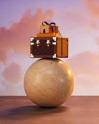
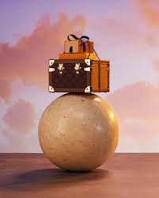
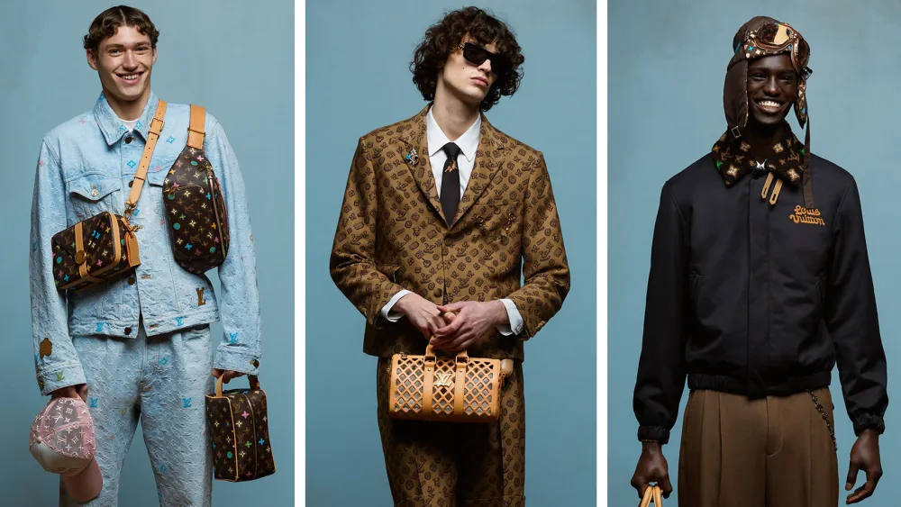

Louis Vuitton Malletier, commonly known as Louis Vuitton (/luːˈiː vɪˈtɒn/ ⓘ, French: [lwi vɥitɔ̃] ⓘ), is a French luxury fashion house and company founded in 1854 by Louis Vuitton.[1] The label's LV monogram appears on most of its products, ranging from luxury bags and leather goods to ready-to-wear, shoes,[4] perfumes, watches, jewellery, accessories, sunglasses and books. Louis Vuitton is one of the world's leading international fashion houses. It sells its products through standalone boutiques, lease departments in high-end departmental stores, and through the e-commerce section of its website.[5][6] For six consecutive years (2006–2012), Louis Vuitton was named the world's most valuable luxury brand. Its 2012 valuation was US$25.9 billion.[7] In 2013, the valuation of the brand was US$28.4 billion with revenue of US$9.4 billion.[8] The company operates in 50 countries with more than 460 stores worldwide.[9] Louis Vuitton is a subsidiary of LVMH and has faced some episodes of criticism: continuous targeting due to its failures in ceasing forced labour,[10][11][12] alleged mistreatment of its models in 2017,[13] and a series of strong polemics in Barcelona, Catalonia (due to sponsoring the 2024 America's Cup) that involved an administratively opaque fashion show,[14][15][16] significant damages in the Park Güell's UNESCO World Heritage Site,[17] and multiple citizen protests against the company.[18][19][20]


History Founding to World War II See also: Louis Vuitton (designer) The Louis Vuitton label was founded by Vuitton in 1854 on Rue Neuve des Capucines in Paris.[21] Louis Vuitton had observed that the HJ Cave Osilite[22] trunk could be easily stacked. In 1858, Vuitton introduced his flat-topped trunks with Trianon canvas, making them lightweight and airtight.[21] Before the introduction of Vuitton's trunks, rounded-top trunks were used, generally to promote water runoff, and thus could not be stacked. It was Vuitton's gray Trianon canvas flat trunk that allowed the ability to stack them on top of another with ease for voyages. Many other luggage makers later imitated Vuitton's style and design.[6] The company participated in the 1867 Universal Exhibition in Paris.[21] In 1871, Ōyama Iwao became the first recorded Japanese customer, ordering a set of luggage while in Paris as a military observer during the Franco-Prussian War.[23] To protect against the duplication of his look, Vuitton changed the Trianon design to a beige-and-brown stripes design in 1876.[6] By 1885, the company opened its first store in London on Oxford Street.[21] Soon thereafter, due to the continuing imitation of his look, in 1888, Vuitton created the Damier Canvas pattern, which bore a logo that reads "marque L. Vuitton déposée", which translates into "L. Vuitton registered trademark". In 1892, Louis Vuitton died, and the company's management passed to his son.[6][21] Ad for Louis Vuitton luggage, 1898 After the death of his father, Georges Vuitton began a campaign to build the company into a worldwide corporation, exhibiting the company's products at the Chicago World's Fair in 1893. In 1896, the company launched the signature Monogram canvas[24] and made the worldwide patents on it.[6][21] Its graphic symbols, including quatrefoils and flowers (as well as the LV monogram), were based on the trend of using Japanese Mon designs in the late Victorian era.[25] The patents later proved to be successful in stopping counterfeiting. In this same year, Georges travelled to the United States, where he toured cities such as New York, Philadelphia, and Chicago, selling Vuitton products. In 1901, the Louis Vuitton Company introduced the Steamer Bag, a smaller piece of luggage designed to be kept inside Vuitton luggage trunks.

By 1913, the Louis Vuitton Building opened on the Champs-Elysees. It was the largest travel-goods store in the world at the time. Stores also opened in New York, Bombay, Washington, London, Alexandria, and Buenos Aires as World War I began. Afterwards, in 1930, the Keepall bag was introduced. During 1932, LV introduced the Noé bag. This bag was originally made for champagne vintners to transport bottles. Soon thereafter, the Louis Vuitton Speedy bag was introduced (both are still manufactured today).[21] In 1936 Georges Vuitton died, and his son, Gaston-Louis Vuitton, assumed control of the company.[21] WWII Nazi collaboration During World War II, Louis Vuitton collaborated with the Nazis during the German occupation of France. The French book Louis Vuitton, A French Saga, authored by French journalist Stephanie Bonvicini and published by Paris-based Editions Fayard,[26] tells how members of the Vuitton family actively aided the Vichy government led by Marshal Philippe Pétain and increased their wealth from their business affairs with the Germans. The family set up a factory dedicated to producing artefacts glorifying Pétain, including more than 2,500 busts. Caroline Babulle, a spokeswoman for the publisher, Fayard, said: "They have not contested anything in the book, but they are trying to bury it by pretending it doesn't exist."[27] Responding to the book's release in 2004, a spokesman for LVMH said: "This is ancient history. The book covers a period when it was family-run and long before it became part of LVMH. We are diverse, tolerant and all the things a modern company should be."[27] An LVMH spokesman told the satirical magazine Le Canard Enchaîné: "We don't deny the facts, but regrettably the author has exaggerated the Vichy episode. We haven't put any pressure on anyone. If the journalists want to censor themselves, then that suits us fine." That publication was the only French periodical to mention the book, possibly because LVMH is the country's biggest advertiser in the press.[27] 1945 through 2000
See also: Louis Vuitton Cup, America's Cup, and LVMH During this period, Louis Vuitton began to incorporate leather into most of its products, which ranged from small purses and wallets to larger pieces of luggage. In order to broaden its line, the company revamped its signature Monogram canvas in 1959[21] to make it more supple, allowing it to be used for purses, bags, and wallets. It is believed that in the 1920s, counterfeiting returned as a greater issue to continue on into the 21st century.[6] In 1966, the Papillon was launched (a cylindrical bag that is still popular today). By 1977 with annual revenue up to 70 million Francs (US$14.27 million).[28] A year later, the label opened its first stores in Japan: in Tokyo and Osaka. In 1983, the company joined with America's Cup to form the Louis Vuitton Cup, a preliminary competition (known as an eliminatory regatta) for the yacht race. Louis Vuitton later expanded its presence in Asia with the opening of a store in Taipei, Taiwan in 1983 and Seoul, South Korea in 1984. In the following year, 1985, the Epi leather line was introduced.[21] 1987 saw the creation of LVMH.[21] Moët et Chandon and Hennessy, leading manufacturers of champagne and cognac, merged respectively with Louis Vuitton to form the luxury goods conglomerate. Profits for 1988 were reported to have been up by 49% more than in 1987. By 1989, Louis Vuitton came to operate 130 stores worldwide.[21] Entering the 1990s, Yves Carcelle was named president of LV, and in 1992, Louis Vuitton entered mainland China by opening its first store in Beijing at the Palace Hotel. Further products became introduced such as the Taiga leather line in 1993, and the literature collection of Voyager Avec... in 1994. In 1996, the celebration of the Centennial of the Monogram canvas was held in seven cities worldwide.[21] In 1997, Louis Vuitton made Marc Jacobs its Artistic Director.[29] In March of the following year, he designed and introduced the company's first "prêt-à-porter" line of clothing for men and women. Also in this year products introduced included the Monogram Vernis line, the LV scrapbooks, and the Louis Vuitton City Guide.[21]
 

The last events in the 20th century were the release of the mini monogram line in 1999. The opening of the first store in Africa in Marrakech, Morocco, in 2000. Finally, the auction at the International Film Festival in Venice, Italy, where the vanity case "amfAR" designed by Sharon Stone was sold, with the proceeds going to the Foundation for AIDS Research (also in 2000).[21] 2001 to 2011 Louis Vuitton VIP room in Vienna for ordering custom-designed goods By 2001, Stephen Sprouse, in collaboration with Marc Jacobs, designed a limited-edition line of Vuitton bags[21] that featured graffiti written over the monogram pattern. The graffiti read Louis Vuitton and, on certain bags, the name of the bag (such as Keepall and Speedy). Certain pieces, which featured the graffiti without the Monogram canvas background, were only available on Louis Vuitton's V.I.P. customer list. Jacobs also created the charm bracelet, the first-ever piece of jewellery from LV, within the same year.[21] In 2002, the Tambour watch collection was introduced.[21] During this year, the LV building in Tokyo's Ginza district was opened, and the brand collaborated with Bob Wilson for its Christmas windows scenography. In 2003, Takashi Murakami,[21] in collaboration with Marc Jacobs, masterminded the new Monogram Multicolore canvas range of handbags and accessories. This range included the monograms of the standard Monogram canvas but in 33 different colours on either a white or black background. (The classic canvas features gold monograms on a brown background.) Murakami also created the Cherry Blossom pattern, in which smiling cartoon faces in the middle of pink and yellow flowers were sporadically placed atop the Monogram canvas. This pattern appeared on a limited number of pieces. The production of this limited-edition run was discontinued in June 2003. Within 2003, the stores in Moscow, Russia, and in New Delhi, India were opened, the Utah and Suhali leather lines were released, and the 20th anniversary of the LV Cup was held.[21] In 2004, Louis Vuitton celebrated its 150th anniversary. The brand also inaugurated stores in New York City (on Fifth Avenue), São Paulo, Mexico City, Cancun and Johannesburg. It also opened its first global store in Shanghai. By 2005, Louis Vuitton reopened its Champs-Élysées store in Paris designed by the American Architect Eric Carlson and released the Speedy watch collection. In 2006, LV held the inauguration of the Espace Louis Vuitton on its 7th floor.[21] In 2008, Louis Vuitton released the Damier Graphite canvas. The canvas features the classic Damier pattern but in black and grey, giving it a masculine look and urban feel. Also in 2008, Pharrell Williams co-designed a series of jewellery ("Blason") and glasses for Louis Vuitton.[30]
In 2010, Louis Vuitton opened what is described as their most luxurious store in London.[31] In early 2011, Louis Vuitton hired Kim Jones as its "Men Ready-to-Wear Studio and Style Director". He became the lead designer of menswear while working under the company-wide artistic directorship of Marc Jacobs.[32] On 17 September 2011, the company opened its Louis Vuitton Island Maison at Marina Bay Sands, Singapore.[33] 2012 to present As of September 2013, the company hired Darren Spaziani to lead its accessory collection.[34] On 4 November 2013, the company confirmed that Nicolas Ghesquière had been hired to replace Marc Jacobs as artistic director of women's collections. Ghesquière's first line for the company was shown in Paris in March 2014.[35] On 7 April 2014, Edouard Schneider became the head of press and public relations at Louis Vuitton under Frédéric Winckler, who is Vuitton's communications and events director.[36] On 26 March 2018, Virgil Abloh was named artistic director of men's wear, replacing Kim Jones who had departed for Dior[37]—he was the label's first African-American artistic director and one of few black designers of a major European fashion house.[38] His debut show was held at the 2018 Paris Men's Fashion Week and staged in the historical Palais-Royal gardens' courtyard.[39][40] On 28 November 2021, Abloh died of cardiac angiosarcoma, which he had been battling privately for two years prior.[41] LV was in the first place in the BrandZ's top 10 most valuable luxury brands in 2019, with a worth of $47.2 billion. On 15 January 2020, the company acquired the Sewelô diamond, which is the third-largest rough diamond ever found in history, from Lucara Diamond who mined it from their mine in Botswana.[42][43][44][45] In March 2022, LVMH announced closure of its 120+ stores in Russia, "given the current circumstances in the region,"[46] due to the Russo-Ukrainian War. An LVMH spokesperson stated the company would continue to pay salary and benefits to its 3,500 employees in Russia.[46] On 14 February 2023, Pharrell Williams was named creative director of men's wear.[47] Brand and intellectual property LV monogram The Louis Vuitton brand and the LV monogram are among the world's most valuable brands.[48] According to a Millward Brown 2010 study, Louis Vuitton was then the world's 19th most valuable brand, and was estimated to be worth over US$19 billion.[49] For six consecutive years, Louis Vuitton was number one of the 10 most powerful brands list published by the Millward Brown Optimor's 2011 BrandZ study with value of $24.3 billion. It was more than double the value of the second ranking brand.[50]
Louis Vuitton is one of the most counterfeited brands in the fashion world due to its image as a status symbol.[48] Ironically, the signature Monogram canvas was created to prevent counterfeiting.[51] In 2004, Louis Vuitton fakes accounted for 18% of counterfeit accessories seized in the European Union.[52] The company actively seeks to eradicate counterfeiting, and employs a team of lawyers and special investigation agencies to pursue offenders through the courts worldwide. The company allocates approximately half of its communications budget to counteract counterfeiting of its goods.[6] LVMH, Vuitton's parent company, has described "Some 60 people at various levels of responsibility working full-time on anti-counterfeiting in collaboration with a wide network of outside investigators and a team of lawyers."[53] The company closely controls the distribution of its products.[6] Until the 1980s, Vuitton products were widely sold in department stores, such as Neiman Marcus and Saks Fifth Avenue. Today, Vuitton products are primarily available at company-owned Louis Vuitton boutiques,[6] with a small number of exceptions noted in upscale shopping districts or inside luxury department stores. Company boutiques within department stores operate independently, and are operated by company managers and employees. LV has an official online store, through its main website.[54] In 2006, the company filed a lawsuit against Colorado-based Manifest Information Services Ltd. (aka Manifest Hostmaster and Manifest.com), through WIPO, in order to compel Manifest transfer the domain name LV.com to Louis Vuitton; the legal action failed and the domain was subsequently acquired by Liverpool Victoria (LV=), England's largest fraternal insurance company.[55] Several high-profile rap music artists have mentioned the company in song lyrics, most notably: Kanye West, Juicy J, and Wiz Khalifa.[56][57] Louis Vuitton has been operating in China for 30 years and nowadays the country is the main market for the French maison, boasting about 40 offline stores nationwide.[58] "Simple Living" "Simple Living" image (left) and Vuitton's Audra bag, created by Takashi Murakami (right) On 13 February 2007, Louis Vuitton sent a cease-and-desist order to Danish art student Nadia Plesner for using an image of a bag that allegedly infringed Louis Vuitton's intellectual property rights. Plesner had created a satirical illustration, "Simple Living", depicting a malnourished child holding a designer dog and a designer bag, and used it on T-shirts and posters to raise funds for the charity "Divest for Darfur".[59] On 25 March, the court ruled in favour of LV that the image was a clear infringement of copyright.[60] Despite the ruling, Plesner continued to use the image, arguing artistic freedom, and posted copies of the cease-and-desist order on her website. On 15 April 2008, Louis Vuitton notified Plesner of the lawsuit being brought against her. Louis Vuitton demanded $7,500 (€5,000) for each day Plesner continues to sell the "Simple Living" products, $7,500 for each day the original cease-and-desist letter is published on her website and $7,500 a day for using the name "Louis Vuitton" on her website, plus legal and enforcement costs.[61]
An LVMH spokeswoman interviewed by New York Magazine said that Louis Vuitton were forced to take legal action when Plesner did not respond to their original request to remove the contested image, nor to the subsequent cease-and-desist order.[60] In October 2008, Louis Vuitton declared that the company had dropped its lawsuit[62] but have since reopened it along with a new €205,000 claim due to a painting by the same artist.[63] In May 2011, the court in The Hague found in favour of Plesner's right to freedom of expression.[64] Britney Spears video On 19 November 2007 Louis Vuitton, in further efforts to prevent counterfeiting, successfully sued Britney Spears for violating anti-counterfeiting laws. A part of the music video for the song "Do Somethin'" shows fingers tapping on the dashboard of a hot pink Hummer with what looks like Louis Vuitton's "Cherry Blossom" design bearing the LV logo. Britney Spears herself was not found liable, but a civil court in Paris ordered Sony BMG and MTV Online to stop showing the video. They were also fined €80,000 to each group. An anonymous spokesperson for LVMH stated that the video constituted an "attack" on Louis Vuitton's brands and its luxury image.[65] S-Lock copyright in Hong Kong In another legal warning dated back to September 2012, Louis Vuitton had filed complaints against two small retail shops in Hong Kong for allegedly violating its intellectual property rights in relation to the "S-Lock" design for Louis Vuitton's handbags. According to the Hong Kong-based Apple Daily newspaper, the company was seeking compensation of HK$40,000 (around $US 5,000) and a public apology in the newspaper. The shopkeeper refused to pay, and Louis Vuitton demanded further damages up to HK$150,000 in February 2013. The shop claimed to have sourced two such handbags from Japan at around HK$120, which it retailed at HK$220. In the case of the other small shop selling two handbags, they argued with Louis Vuitton that the designs were different, and got LV's demand reduced to HK$5,000 (around US$640). The owner refused to pay and said they were ready to face LV in court. [66] Checker-pattern chair in Hong Kong barber shop In February 2013, Louis Vuitton issued a complaint against the owner of a barber shop in Hong Kong for allegedly violating its intellectual property rights in relation to a stool using fabric coating that is similar to the checker pattern in Louis Vuitton's handbags. According to the Hong Kong-based Apple Daily newspaper, the company was seeking a compensation of HK$25,000 (around US$3,200) and the publication of an apology in the form of newspaper advertisement. The owner had sourced basic furniture and equipment from the PRC for starting his shop. Facing this accusation, the barbershop owner said he had no means to tackle Louis Vuitton and may have to close down his shop which has been operating for one year in a remote local district on Hong Kong Island. The controversy had caused tremendous concern on Hong Kong news forums and viral protest on Facebook pages.[67] 2021 patent ruling in Japan A Louis Vuitton "Sarah Wallet" On 14 April 2021, Louis Vuitton lost a patent office case in Japan against a Japanese manufacturer.[68] The manufacturer was using centuries old Japanese designs in its goods, the same ones that had originally inspired Louis Vuitton. The Sarah wallet design in particular resembles bag designs[69] that have been used for centuries to contain juzu (strings of beads used in funeral ceremonies - see Japamala#Japanese Buddhism). There has been comment on Japanese social media concerning how the company management seems to have forgotten the origins of Louis Vuitton's designs. The Shoso-in archive has a biwa lute[70] with marquetry patterns to which some Louis Vuitton's designs bear a close resemblance. Products
Louis Vuitton products with Monogram canvas Louis Vuitton shopwindow (2019) Houston, United States Since the 19th century, Louis Vuitton trunks have been made by hand.[6] Contemporary Fashion gives a preview of the creation of the LV trunks: The craftsmen line up the leather and canvas, tapping in the tiny nails one by one and securing the five-letter solid pick-proof brass locks with an individual handmade key, designed to allow the traveller to have only one key for all of his or her luggage. The wooden frames of each trunk are made of 30-year-old poplar that has been allowed to dry for at least four years. Each trunk has a serial number and can take up to 60 hours to make, and a suitcase as many as 15 hours.[6] Iconic bags of Louis Vuitton include the Speedy bag produced in 1930 and Neverfull bags produced in 2007. Both bags have become Louis Vuitton's most successful handbag launches. They were designed for being both stylish and practical. These bags also come in three sizes: Petite Modele, Moyene Modele, and Grand Modele. Each season Louis Vuitton produces rare, limited edition bags that are generally only available by reservation through larger Louis Vuitton stores.[citation needed] Many of the company's products utilize the brown Damier and Monogram canvas materials,[24] both of which were first used in the late 19th century. All of the company's products exhibit the eponymous LV initials. The company markets its product through its own stores located throughout the world, which allows it to control product quality and pricing. It also allows LV to prevent counterfeit products entering its distribution channels. In addition, the company distributes its products through the company's own website, LouisVuitton.com.[6] In June 2021, Louis Vuitton sparked controversy by marketing a $700 scarf called 'Monogram Keffieh'.[71] The traditional Palestinian black and white keffiyeh has been a symbol of Palestinian nationalism since 1968. Louis Vuitton, however, changed the colours from the original black and white to blue and white which Palestinians and pro-Palestine social media activists called the colours of the flag of Israel, sporting with House signature patterns which was described as 'disgraceful'. The users on Twitter started tweeting memes that carried the infamous quote, "If I don't steal it, someone else will" by a repatriated Israeli citizen who recently went viral for trying to illegally occupy a Palestinian's home. Another user accused Louis Vuitton for being politically neutral when it comes to Palestine and Israel, but they're "totally cool" with making money off the keffiyeh.[72] In 2017 Louis Vuitton caused headlines by producing a men's collection using similar prints as Basotho blanket and Thabo Makhetha-Kwinana designs, a controversial move that sparked accusations of cultural appropriation in South Africa and Lesotho.[73][74] Advertising campaigns The Louis Vuitton company cultivates a celebrity following and has featured famous models, musicians and actors, such as Lea Seydoux, Jennifer Lopez, Keith Richards, Kim Kardashian, Madonna, Sean Connery, Matthias Schoenaerts, Angelina Jolie, Gisele Bündchen, Mikhail Gorbachev, JO1 and David Bowie in its marketing campaigns.[75][76]
The company commonly uses print ads in magazines and billboards in cosmopolitan cities. Louis Vuitton Posters by Razzia were popular in the 1980s. It previously relied on selected press for its advertising campaigns (frequently involving prestigious stars like Steffi Graf, Andre Agassi and Catherine Deneuve) shot by Annie Leibovitz. However, Antoine Arnault, director of the communication department, has recently decided to enter the world of television and cinema: The commercial (90 seconds) is exploring the theme "Where will life take you?" and is translated into 13 different languages. This is the first Vuitton commercial ad ever and was directed by renowned French ad director Bruno Aveillan.[77] In 2002, president and CEO of LVMH Watches Daniel Lalonde (later, global CEO for LVMH brands Moët and Dom Pérignon) recruited celebrities, such as Maria Sharapova, Brad Pitt, Tiger Woods, and Uma Thurman, for advertising campaigns photographed by Patrick Demarchelier. Ads featuring Woods reportedly led to a 30% boost in sales, resulting in TAG Heuer being rated as the No. 2 luxury watch brand in America by 2005.[78] In 2021, French actress and Louis Vuitton house ambassador Lea Seydoux wore a custom designed dress by Nicolas Ghesquière to the James Bond No Time to Die premiere in London. The dress itself took over 520 hours to make and the design was consisted of a white silk gown which featured a sparkling chiffon cape. The dress also included 29,000 sequins, 50,000 cuvettes and over 8800 glass beads which were carefully set on the dress.[79][80] In the same year, the luxury brand released an NFT mobile game titled Louis the Game to celebrate its founder's 200th birthday and in an effort to reach out to its younger, Gen-Z audience.[81] In 2022, Deepika Padukone is roped in as House Ambassador.[82][83] Special collaborations Louis Vuitton has had many collaborations with prominent artists and designers. Takashi Murakami created special edition collections, such as the Monogramouflage Collection, which debuted in 2008, and a previous collection, released in 2002, which featured some of his artwork. The creations were "painted" over the traditional monogram canvas, which brought a radical new twist to the timeless design. Marc Jacobs also commemorated a previous collaboration, designed by Stephen Sprouse. This collection, originally released in 2001, featured bold print that looked like graffiti, over the traditional canvas. The recreation of the collab used the same idea, but gave it a new twist using bold colours, like hot pink, neon green, and orange, that also glow in the dark. This recreated version of the graffiti collection was finally released in 2009 to much fanfare. Louis Vuitton also collaborated with Kanye West in 2009, designing his own limited run of shoes. In July 2012, Jacobs teamed up with Yayoi Kusama to create the "Infinitely Kusama" Collection, which features bold colours of dots over the vernis leather or the Monogram canvas. These pieces come in black with white dots, red with white dots, and yellow with black dots. Louis Vuitton collaborated in their Spring–Summer 2016 collection advertising campaign with the highly popular Japanese video game franchise Final Fantasy and the game Final Fantasy XIII's main heroine, Lightning. In 2017 Louis Vuitton collaborated with American streetwear brand Supreme, releasing products in various pop-up stores in major cities around the world. Items feature the Louis Vuitton Monogram canvas mixed with the Supreme box-logo design.[84]

Van Gogh handbag produced in collaboration with Jeff Koons Also in 2017, Louis Vuitton collaborated with artist Jeff Koons for two collections in an effort to "further [explore] the intersection of fashion and art."[85] Nicolas Ghesquiere collaborated with Vogue creative director Grace Coddington on a cat-themed "Catogram" collection in 2018.[86] In June 2019, the brand collaborated with six contemporary artists Sam Falls, Urs Fischer, Nicholas Hlobo, Alex Israel, Tschabalala Self and Jonas Wood on "Artycapucines." Each artist designed their version of the Capucine bag which were sold in numbered, limited quantities.[87] In July 2019, Louis Vuitton opened a temporary exhibition titled "Louis Vuitton X" in Los Angeles, showcasing items from its various collaborations over the years.[88] In October 2019, Louis Vuitton partnered with Riot Games to create digital assets for new skin line named "True Damage", where you can clearly see the LV logo on Qiyana in League of Legends, along with a specialty trophy case for the 2019 League of Legends World Championship.[89] In June 2020, the brand collaborated with Japanese designer Nigo[90] x Virgil Abloh capsule collection. In October 2020, Nicolas Ghesquière reportedly revamped the La Samaritaine department store for the Women's Spring-Summer 2021 fashion show by providing a virtual runway with 360-degree views and social-distanced seating for guests.[91] In March 2024, Tyler Okonma (a.k.a Tyler, The Creator) collaborated with Louis Vuitton to create their 2024 Spring collection. Criticism Alleged mistreatment of models In May 2017, media reported on alleged mistreatment of Louis Vuitton exclusive model Ulrikke Høyer who was to appear on a Louis Vuitton cruise show in Kyoto. The 20-year-old model, who, on arrival, measured 91.5 cm (36 in) around her hips, was told she was "too bloated" and "too big" for her ensemble and instructed to drink only water for 24 hours. The model alleged that she was only informed via her agent in France, who received an email including the text "[she] came yesterday in Tokyo to do her final fitting, and she doesn't fit the exact same dress anymore. She has a belly, her face is more puffy [sic] and the back of her dress is open and you can see it is tight." Despite following the instructions, she was eventually excluded from the show. The model stated that she has "received hundreds of messages from models" who have experienced similar mistreatment from the same Louis Vuitton casting director. The casting director denied the allegations and explained the instructions regarding intake of water as a misunderstanding, that the model was instructed that her intake of liquids was to be limited to water.[92][13] Damaging and opaque privatization of UNESCO historic heritage Few years later, in May 2024, a strong polemic was reported by the media due to the fashion show organized by Louis Vuitton in Barcelona, Catalonia, as a result of its main sponsorhip in the 2024 America's Cup hosted in this city. The company managed to organize the event inside the Antoni Gaudi's authored gardens Park Güell, declared as a UNESCO World Heritage Site, despite the public regulations that strictly limited its activities to "scientific and educative purposes".[93] The week before the show, the technical contractors were found to have destroyed the wall of a protected stairway and a stone ball.[93][17][94] The negligence, however, was only admitted after the damage had been denounced and published in the press by the neighborhood association. The residents' platform criticized that neither the company, nor the contractors or the City Council of Barcelona had informed them about such big occasion neither its impact.[94]
Both the evenings before, and during the day of the fashion show, hundreds of inhabitants protested in the flagship Louis Vuitton shop of Barcelona (Passeig de Gràcia) and in the outskirts of Park Güell.[16][96] They blocked the access of the shop with motos such as "Your luxury, our misery",[96] celebrated cassolades,[97] and demonstrated few times in front of the gardens' main doors against the company and the City Council.[98][18] A day before, it was also disclosed by investigative journalists Octuvre that Louis Vuitton had secretly pressured and achieved the free usage of the part as a sponsorship deal for the America's Cup:[15] it was later published by the press that a tailor-made secret decree was concocted so that the parade could fit in as an act of public interest.[16][99] At the arrival of the show attendants to the venue on May 23, hundreds of protesters, mostly activists, neighbors, and families, gathered in the surroundings of the park and attempted to peacefully trespass the police cordon.[19][20][100] The tension increased and the demonstration ended with police charges, while the event (Cruise 2025 Collection; in Catalan Col·lecció Creuer 2025)[19][20][100] was finally celebrated in the Sala Hipòstila of Gaudi's park premises.[101][102][103] During the gala reception of the show, VIP guests by Louis Vuitton were, however, photographed by the media mocking and even mooning the outside protesters from a viewpoint of the park.[104][105][106][107] References "Louis Vuitton Malletier SAS". louisvuitton.com. Archived from the original on 7 December 2020. Retrieved 9 September 2020. "Louis Vuitton on the Forbes World's Most Valuable Brands List". forbes.com. Archived from the original on 7 February 2021. Retrieved 4 September 2017. "La marque Louis Vuitton, star française dans le monde". lexpansion.lexpress.fr. 2 October 2013. Archived from the original on 22 July 2021. Retrieved 22 July 2021. Nandi, Swagota (18 February 2023). "22 Most Expensive Shoes in the World of All Time". Pinkvilla. Archived from the original on 3 April 2023. Retrieved 22 July 2023. "Legal Notice". Louis Vuitton. Archived from the original on 1 May 2011. Retrieved 24 April 2010. Martin, Richard (1995). Contemporary fashion. Guatemala: St. James Press. p. 750. ISBN 1-55862-173-3. Roberts, Andrew (21 May 2012). "Louis Vuitton Tops Hermes As World's Most Valuable Luxury Brand". Bloomberg.com. Bloomberg L.P. Archived from the original on 10 January 2015. Retrieved 28 May 2012. forbes.com Louis Vuitton Archived 7 February 2021 at the Wayback Machine Globe and Mail Louis Vuitton Archived 29 October 2020 at the Wayback Machine Mosley, Layna (2010). Labor Rights and Multinational Production. Cambridge University Press. p. 100. ISBN 9781139493451. Suleymanova, Radmilla (14 July 2021). "Are your favourite fashion brands using forced labour?". Al Jazeera. Retrieved 24 May 2024. Imam, Ambreen (5 November 2022). "Fashion Industry Giants and their failure to fix labor exploitation". Fashion and Law Journal. Retrieved 24 May 2022. Ahmed, Osman (19 May 2017). "Ashley Brokaw and Ulrikke Hoyer Speak on Louis Vuitton Casting Controversy". businessoffashion.com. Archived from the original on 19 May 2017. Retrieved 22 May 2017. Congostrina, Alonso L. (19 May 2024). "El Ayuntamiento de Barcelona considera "idónea" la celebración de un desfile de moda en el Park Güell". El País (in Spanish). Retrieved 24 May 2024. Subirana, Jordi (24 May 2024). "Així es va gestar el permís de Collboni a la desfilada polèmica de Louis Vuitton". TOT Barcelona (in Catalan). Retrieved 24 May 2024. Coronado Nadal, Laia (23 May 2024). "Indignació per la "privatització" del Park Güell: protestes veïnals per les destrosses i el soroll". Línia Xarxa (in Catalan). Retrieved 24 May 2024. "Park Güell stairs damaged during construction of Louis Vuitton's fashion show". Catalan News. 15 May 2024. Retrieved 24 May 2024. Planta Baixa (22 May 2024). "Tensió i protestes veïnals al Parc Güell arran de la desfilada de moda de Louis Vuitton" (Video). Televisió de Catalunya (in Catalan). Retrieved 24 May 2024. "Un desfile de Louis Vuitton en el Park Güell pone a los vecinos en pie de guerra: "Los barrios no somos una pasarela"". Radiotelevisión Española (in Spanish). 23 May 2024. Retrieved 24 May 2024.
Sagrera, Berto (23 May 2024). "Càrregues policials a la protesta contra la desfilada de Louis Vuitton al Park Güell". El Nacional (in Catalan). Retrieved 24 May 2024. "Timeline". Louis Vuitton. Archived from the original on 19 December 2008. Retrieved 3 March 2008. "A large suitcase of coffee color leather, with leather straps and with black and claret paited owner's stripes, monogrammed R.F., the interior fitted with a tray and labelled H.J. Cave and Sons 'Osilite' trademark-31.5 x 18 x 11in. (80 x 46 x 26 cm.); another matching smaller case-29 x 17 x 10in. (74 x 43 x 25.5 cm.); and a smaller lightweight case, the interior labelled as above-24 x 13.75 x 6in. (61 x 35 x 15 cm.), 1930s (3)". Christies.com. 25 January 2000. Archived from the original on 18 November 2012. Retrieved 7 November 2012. Horne, Alistair (2015). Hubris: The Tragedy of War in the Twentieth. W&N. p. 30. ISBN 978-0297867623. Louis Vuitton Monogram canvases researchgate.net Vuitton, Louis. "News By Louis Vuitton: EXHIBITION IN TOKYO: INSPIRATIONAL JAPAN". eu.louisvuitton.com. Archived from the original on 20 December 2016. Retrieved 13 December 2016. "Fayard | Editions Fayard". www.fayard.fr. Archived from the original on 16 August 2021. Retrieved 25 August 2021. Willsher, Kim (3 June 2004). "Louis Vuitton's links with Vichy regime exposed, The Guardian, June 3, 2004". London. Archived from the original on 2 June 2021. Retrieved 11 May 2010. "1977 Exchange Rates" (PDF). Archived (PDF) from the original on 12 May 2015. Retrieved 16 May 2010. "Marc Jacobs". Louis Vuitton. Archived from the original on 18 May 2012. Retrieved 26 May 2012. "Hip-hop's glittering touchstone". The Australian. Retrieved 27 February 2009. Zenner, Brittany. "Insidelux.com". Insidelux.com. Archived from the original on 14 May 2011. Retrieved 29 April 2011. White, Belinda. "Kim Jones takes the helm at Louis Vuitton menswear". The Telegraph. Archived from the original on 1 January 2012. Retrieved 26 May 2012. "Louis Vuitton Island Maison unveiled in Singapore". Pursuitist. Business Insider. 14 October 2011. Archived from the original on 10 November 2018. Retrieved 10 November 2018. Socha, Miles (24 September 2013). "Louis Vuitton Taps Accessories Designer Darren Spaziani". WWD. Archived from the original on 29 September 2013. Retrieved 24 September 2013. Socha, Miles (4 November 2013). "Louis Vuitton Confirms Nicolas Ghesquière Hire". WWD. Archived from the original on 15 November 2013. Retrieved 4 November 2013. Socha, Miles (17 March 2014). "Louis Vuitton Taps Edouard Schneider to Head P.R." WWD. Archived from the original on 9 April 2014. Retrieved 18 March 2014. Paton, Elizabeth (19 March 2018). "Dior Confirms Kim Jones as Men's Wear Artistic Director". The New York Times. ISSN 0362-4331. Archived from the original on 19 March 2018. Retrieved 12 July 2019. Friedman, Vanessa; Paton, Elizabeth (26 March 2018). "Louis Vuitton Names Virgil Abloh as Its New Men's Wear Designer". The New York Times. Archived from the original on 17 April 2018. Retrieved 12 August 2018. Trebay, Guy (22 June 2018). "Virgil Abloh Tells Louis Vuitton's Story of Fashion". The New York Times. Archived from the original on 13 August 2018. Retrieved 12 August 2018. "Designer Virgil Abloh unveiled his first-ever Louis Vuitton collection at Fashion Week in Paris". Newsweek. 21 June 2018. Archived from the original on 13 August 2018. Retrieved 12 August 2018. Georgiou, Aristos (29 November 2021). "Cardiac angiosarcoma explained as Off-White founder Virgil Abloh dies". Newsweek. Archived from the original on 19 August 2022. Retrieved 19 August 2022. Friedman, Vanessa (15 January 2020). "The Second-Biggest Diamond in History Has a New Owner". New York Times. Archived from the original on 25 January 2020. Retrieved 9 February 2020. Matthams, Kate (17 January 2020). "Louis Vuitton Buys Third-Biggest Rough Diamond Ever, Eyes Top-Five Jewelry Position". Forbes Magazine. Archived from the original on 1 February 2020. Retrieved 9 February 2020. Yeung, Jessie (17 January 2020). "Louis Vuitton just bought the world's second-biggest diamond". CNN. Archived from the original on 4 February 2020. Retrieved 9 February 2020. Brace-Thompson, Jim (26 July 2021). "Botswana Produces the World's Third-Largest Diamond". Rock & Gem Magazine. Archived from the original on 9 November 2022. Retrieved 9 November 2022. Maheshwari, Sapna (4 March 2022). "Luxury giants LVMH and Hermès will close stores in Russia temporarily". The New York Times. ISSN 0362-4331. Archived from the original on 15 August 2022. Retrieved 15 August 2022. "Pharrell Williams Named Next Louis Vuitton Men's Creative Director". Hypebeast. 14 February 2023. Archived from the original on 4 March 2023. Retrieved 4 March 2023. "Louis Vuitton Logo: Design and History". FamousLogos.net. Archived from the original on 18 October 2012. Retrieved 12 October 2011. "Millwardbrown.com". Archived from the original on 1 January 2011. Retrieved 29 April 2011. LuxuryDiffusion.com. "LuxuryDiffusion.com Highlights Louis Vuitton Most Valuable Luxury Brand For Sixth Consecutive Year". PRLog. Archived from the original on 25 January 2012. Retrieved 12 May 2011. "European trademarks vs. Google". Archived from the original on 1 July 2006. Retrieved 25 June 2006.
"Times Online: Special Report: Trying to stub out the fakes". The Times. London. 11 June 2006. Archived from the original on 14 May 2011. Retrieved 11 May 2010. "Special Report: Trying to stub out the fakes". The Times. London. 11 June 2006. Retrieved 11 May 2010. [dead link] "Louis Vuitton: luxury leather luggage, French fashion designer". Archived from the original on 4 March 2008. Retrieved 4 March 2008. Louis Vuitton Malletier S.A. v. Manifest Information Services c/o Manifest Hostmaster Archived 20 April 2014 at the Wayback Machine accessed 24 February 2015. Wiz Khalifa – Fly You, archived from the original on 22 March 2017, retrieved 21 March 2017 "Louis Vuitton – A Legendary". Louis Vuitton. 2016. Archived from the original on 31 January 2017. Retrieved 18 January 2017. David, Matthieu (19 February 2020), "Louis Vuitton in China: The king of luxury brands in China", Daxue Consulting - Market Research China, archived from the original on 23 June 2022, retrieved 23 June 2022 "Art Student Nadia Plesner's Giant Louis Vuitton Copyright Suit". New York. 6 May 2008. Archived from the original on 2 December 2010. Retrieved 12 May 2011. "Louis Vuitton Tried to Prevent the Nadia Plesner Lawsuit". New York. 9 May 2008. Archived from the original on 7 March 2010. Retrieved 12 May 2011. Masnick, Mike (25 April 2008). "Louis Vuitton Sues Darfur Fundraiser; Seems Unclear on the Concept of Trademark". Techdirt. Archived from the original on 11 May 2011. Retrieved 12 May 2011. Beck, Cecilie (27 October 2008). "Beck: Franske hyklere". Ekstra Bladet (in Danish). Archived from the original on 19 February 2010. Retrieved 12 May 2011. Stiernstedt, Jenny (9 March 2011). "Målade en väska – ska böta 1.820.000". Dagens Nyheter (in Swedish). Archived from the original on 29 April 2011. Retrieved 12 May 2011. "Artist wins suit against fashion icon". The Copenhagen Post. 5 May 2011. Archived from the original on 13 May 2011. Retrieved 12 May 2011. "Louis Vuitton Wins Spears Video Lawsuit". FOXNews. Associated Press. 20 November 2007. Archived from the original on 21 November 2007. Retrieved 20 November 2007. "Louis Vuitton sues Hong Kong shops for S-Lock copyright". Apple Daily. Hong Kong. 6 March 2013. Archived from the original on 9 October 2013. Retrieved 6 March 2013. "Louis Vuitton sues Hong Kong Barber shop for a checkered stool". Apple Daily. Hong Kong. 5 March 2013. Archived from the original on 27 May 2014. Retrieved 5 March 2013. "判定". Jpo.go.jp. Archived from the original on 11 June 2021. Retrieved 16 February 2022. "市松柄 珠数袋｜京都 京念珠/数珠製造卸【 神戸珠数店 】｜". Archived from the original on 13 June 2021. Retrieved 13 June 2021. "Image from Nara National Museum Shop website". Archived from the original on 13 June 2021. Retrieved 13 June 2021. Ayoubi, Nur (2 June 2021). "Louis Vuitton under fire for 'disgusting' $700 keffiyeh". middleeasteye.net. Archived from the original on 6 June 2021. Retrieved 6 June 2021. Shiraz, Zarafshan (2 June 2021). "Louis Vuitton blasted for 'disgraceful' keffiyeh with Israel flag colours". hindustantimes.com. Archived from the original on 6 June 2021. Retrieved 6 June 2021. "Cultural inspiration or appropriation?". BBC News. Archived from the original on 18 June 2023. Retrieved 18 June 2023. "Cultural appropriation or appreciation? Louis Vuitton turns Basotho blankets into expensive fashion items | eNCA". www.enca.com. Archived from the original on 18 June 2023. Retrieved 18 June 2023. Levin, Dan (5 November 2007). "Louis Vuitton Ad Shows Gorbachev Accompanied by Subversive Text". The New York Times. Archived from the original on 29 November 2011. Retrieved 5 November 2007. Louis Vuitton [@LouisVuitton] (22 April 2021). "#BTS for #LouisVuitton. Joining as new House Ambassadors" (Tweet). Retrieved 23 April 2021 – via Twitter. "Fashion Week Daily – Dispatch". Archived from the original on 9 December 2012. Retrieved 4 March 2008. Gupte, Pranay Archived 4 September 2018 at the Wayback Machine "Daniel Lalonde Works His Marketing Magic for LVMH", The New York Sun, 16 May 2005. Retrieved 29 November 2018. "Discover the intricate work that went into Ana and Léa's Bond premiere gowns". 29 September 2021. Archived from the original on 9 October 2021. Retrieved 9 October 2021. "10 of the best red-carpet fashion moments from the world premiere of 'No Time to Die'". 28 September 2021. Archived from the original on 9 October 2021. Retrieved 9 October 2021. "Louis Vuitton Launches NFT Game 200-Year Anniversary Celebration". Highsnobiety. 11 August 2021. Archived from the original on 20 April 2023. Retrieved 27 June 2022. "How Louis Vuitton picks its celebrity ambassadors". nss magazine. Archived from the original on 20 April 2023. Retrieved 19 December 2022. Kaushal, Sweta. "Deepika Padukone Shares Philosophy Behind Her Brand Associations". Forbes. Archived from the original on 19 December 2022. Retrieved 19 December 2022. Diderich, Joelle (19 January 2017). "Louis Vuitton to Unveil Supreme Collaboration at Men's Show". WWD. Archived from the original on 12 July 2019. Retrieved 12 July 2019. Vuitton, Louis. "News By Louis Vuitton: MASTERS – A COLLABORATION WITH JEFF KOONS". us.louisvuitton.com. Archived from the original on 10 February 2018. Retrieved 9 February 2018. "You can now buy designer cat pajamas from Louis Vuitton – and they are adorable". The Independent. 16 November 2018. Archived from the original on 12 July 2019. Retrieved 12 July 2019.
Harper, Marques (7 June 2019). "Louis Vuitton to debut new exhibition, launch ArtyCapucines bags in Beverly Hills". Los Angeles Times. Archived from the original on 12 July 2019. Retrieved 12 July 2019. Foussianes, Chloe (28 June 2019). "Louis Vuitton Opens Massive Fashion Exhibition in L.A." Town & Country. Archived from the original on 17 July 2019. Retrieved 12 July 2019. Vuitton, Louis. "Announcement by Louis Vuitton: LOUIS VUITTON ANNOUNCES LEAGUE OF LEGENDS PARTNERSHIP". us.louisvuitton.com. Archived from the original on 10 November 2019. Retrieved 10 November 2019. Phelps, Nicole (9 March 2020). "Virgil Abloh Shares Pics of His LV² Collaboration With Nigo and Clarifies That "Streetwear Is Dead" Comment". Vogue. Archived from the original on 4 August 2020. Retrieved 27 July 2020. Deyvanshi Masrani (7 October 2020). "Louis Vuitton Women's SS 2021 Show With '80s Inspiration Takes The Digital Experience To The Next Level". Haute Living. Archived from the original on 27 October 2020. Retrieved 15 October 2020. Fisher, Kendall (19 May 2017). "Louis Vuitton Casting Director Responds to Size 4 Model Who Claims She Was Sent Home From Show for Being Too Big". E!. Archived from the original on 22 May 2017. Retrieved 22 May 2017. "Destrossen una escala del Park Güell per muntar la desfilada de Louis Vuitton de la Copa Amèrica". Nació Digital (in Catalan). 14 May 2022. Retrieved 24 May 2024. "Indignació a la Salut per la desfilada de Louis Vuitton al Parc Güell: "És exclusiu i privatiu"". Betevé (in Catalan). 16 May 2024. Retrieved 24 May 2024. Rus, Alba (18 May 2024). "Els veïns del Park Güell denuncien els danys, les restriccions i la poca transparència de la desfilada de Louis Vuitton". Diari de Barcelona. Retrieved 24 May 2024. Molina, Àngels (21 May 2024). "Desenes de persones protesten contra la Copa Amèrica davant la botiga de Louis Vuitton" (Video). Betevé. Retrieved 24 May 2024. "Cassolada al Park Güell hores abans de la desfilada de Louis Vuitton: consulta les afectacions" (Video). Televisió de Catalunya (in Catalan). 22 May 2024. Retrieved 24 May 2024. Carbonell, Sílvia (21 May 2024). "Convoquen una concentració sorollosa i festiva contra la desfilada de Louis Vuitton al Parc Güell". Betevé (in Catalan). Retrieved 24 May 2024. Cobo, David (24 May 2024). "Barcelona va fer un decret a mida perquè Louis Vuitton desfilés pel Park Güell". Nació Digital (in Catalan). Retrieved 24 May 2024. Salamé, Albert (23 May 2024). "Càrregues de la policia en la protesta veïnal contra la desfilada de Louis Vuitton al Parc Güell". Vilaweb (in Catalan). Retrieved 24 May 2024. Leblanc, Kevin (23 May 2024). "Louis Vuitton Unveils an Awe-Inspiring Cruise Collection Full of Texture and Volume". Elle. Retrieved 24 May 2024. Jover, Alex (24 May 2024). "Louis Vuitton reinterpreta Gaudí al Park Güell". La Vanguardia (in Catalan). Retrieved 24 May 2024. Polo Dalfó, Laura (24 May 2024). "La cara A i la cara B de la desfilada de Louis Vuitton a Barcelona". Cadena SER (in Catalan). Retrieved 24 May 2024. Asensio Clupés, Marc (23 May 2024). ""A ver si tenéis huevos a subir...", deien entre riures alguns dels assistents a la desfilada al Park Güell de #LouisVuitton" (Press photographies). X (in Catalan). Retrieved 24 May 2024. Pantaleoni, Ana (24 May 2024). "Felix, la cacerola y Barcelona, en el desfile de Louis Vuitton". El País (in Spanish). Asensio Clupés, Marc (23 May 2024). "Un assistent a la desfilada de #LouisVuitton al Park Güell es toca els genitals com a mostra de menyspreu i desprestigi cap als manifestants". X (in Catalan). Retrieved 24 May 2024. Asensio Clupés, Marc (23 May 2024). "Després de tocar-se els genitals, el mateix assisten a la desfilada de #LouisVuitton fa un "calvo" als manifestants". X (in Catalan). Retrieved 24 May 2024.